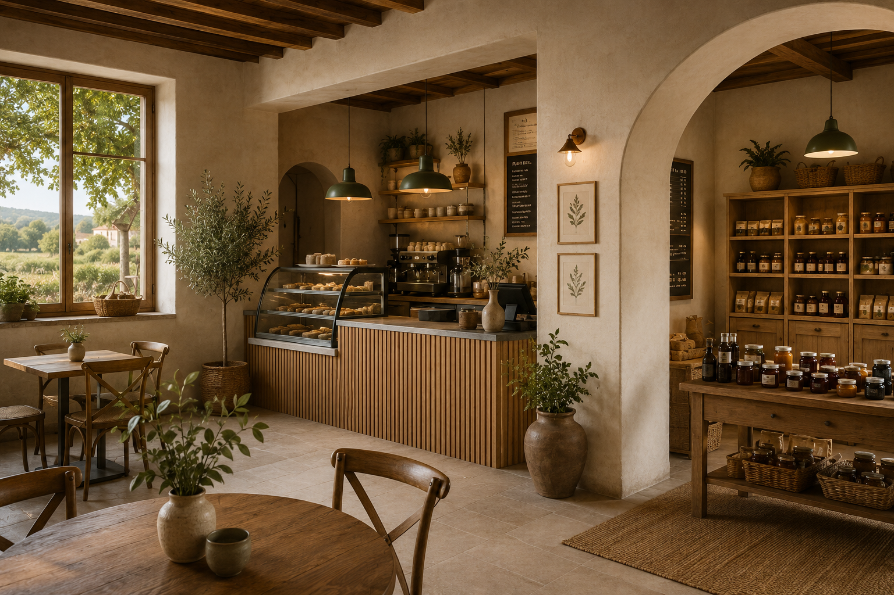
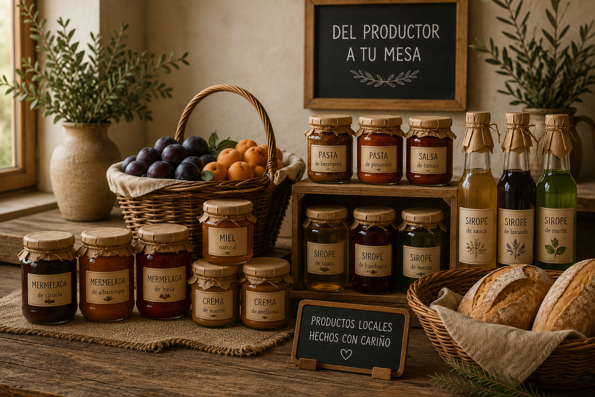
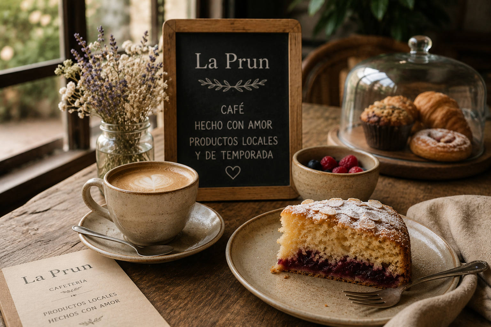
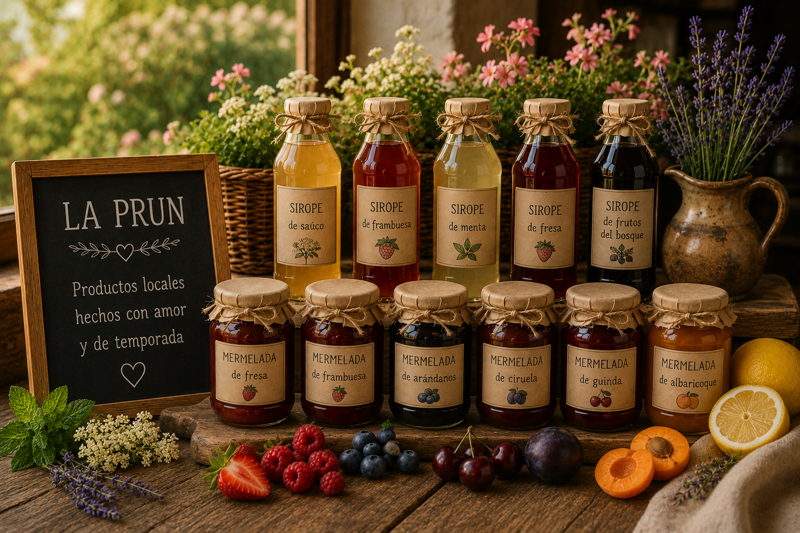
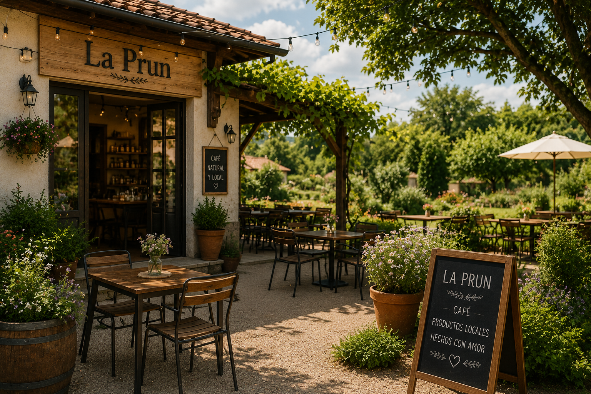
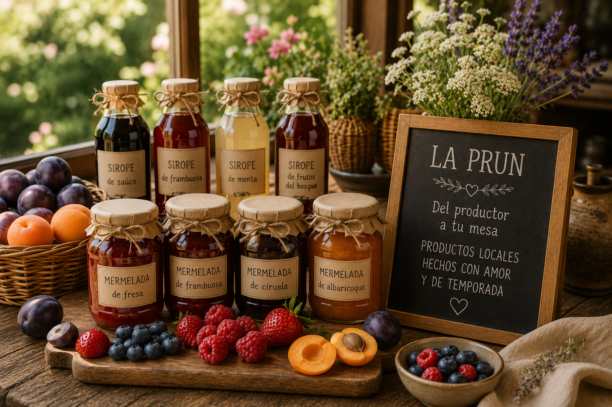
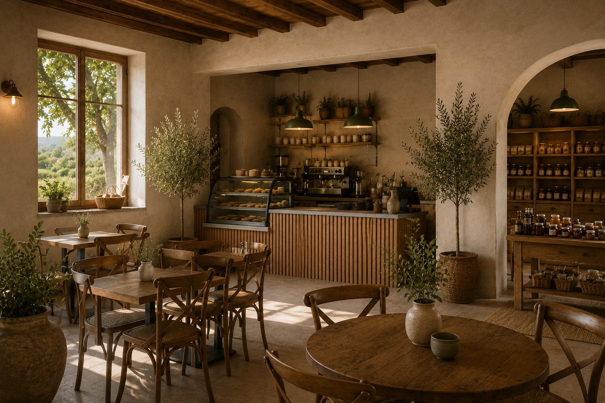

Café
Cafés preparados con cuidado para disfrutar en un ambiente tranquilo y cercano.

CAFETERÍA · PRODUCTOS LOCALES · EXPERIENCIA AUTÉNTICA
Un espacio cálido donde el café, los productos artesanales y la vida local se encuentran.
NUESTRA HISTORIA
La Prun nace como un lugar para disfrutar con calma: café, dulces, productos artesanales y sabores de proximidad.
Una propuesta que combina tradición, naturaleza y una experiencia contemporánea en un espacio acogedor.

CAFETERÍA
Cafés preparados con cuidado para disfrutar en un ambiente tranquilo y cercano.
Repostería y pequeños caprichos pensados para acompañar cada momento.
Una selección de productos artesanales y sabores de productores de la zona.

TIENDA LOCAL

LA PRUN


RESERVAS
Reserva tu mesa y disfruta de La Prun con calma.
Solicitar reserva
VISÍTANOS
Dirección por definir
Horario por definir
contacto@laprun.es